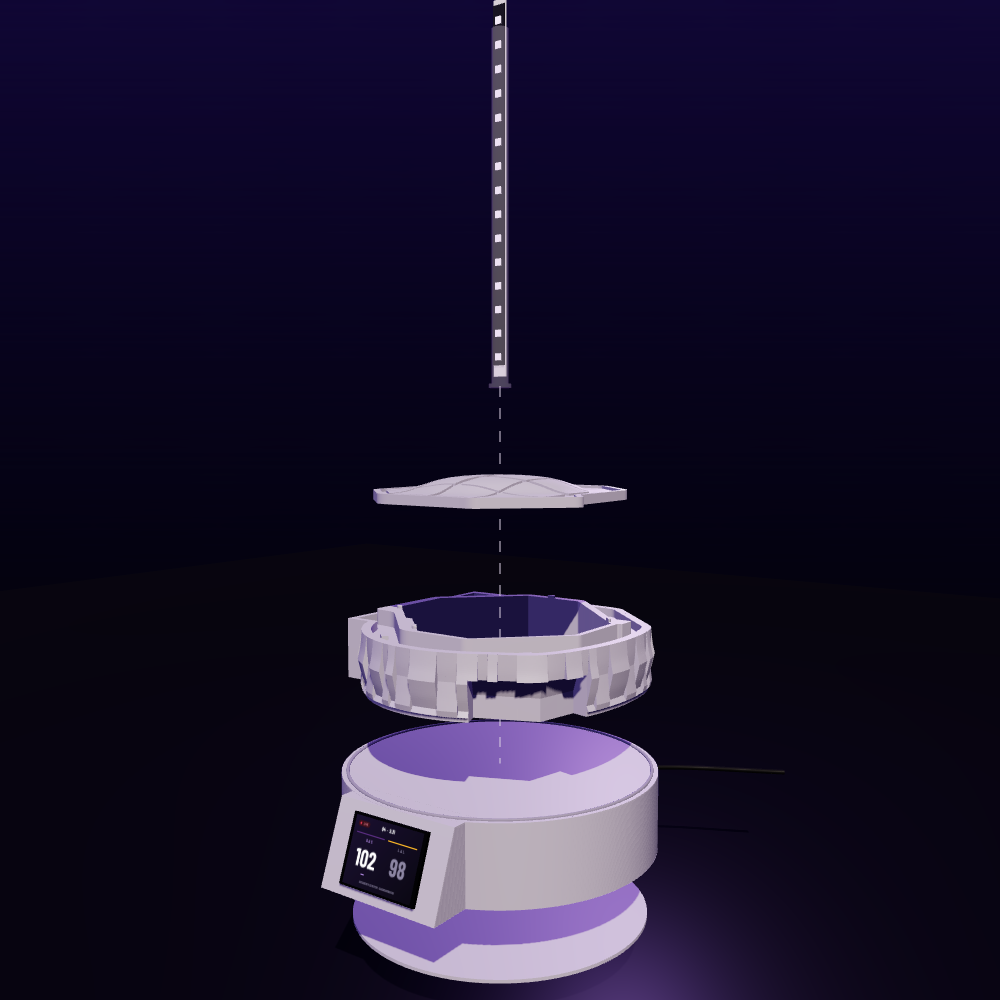
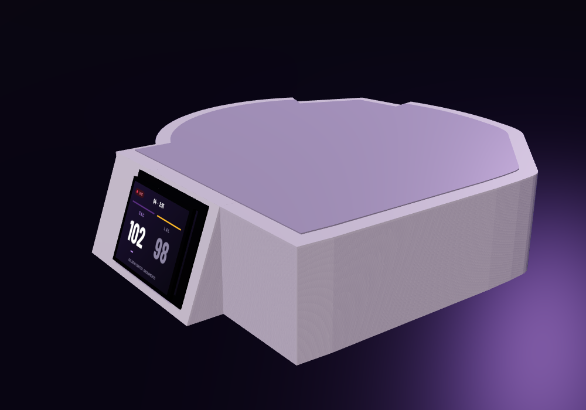
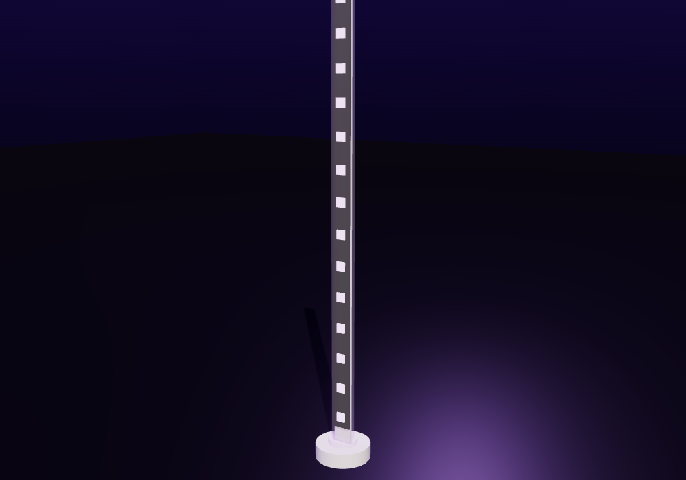
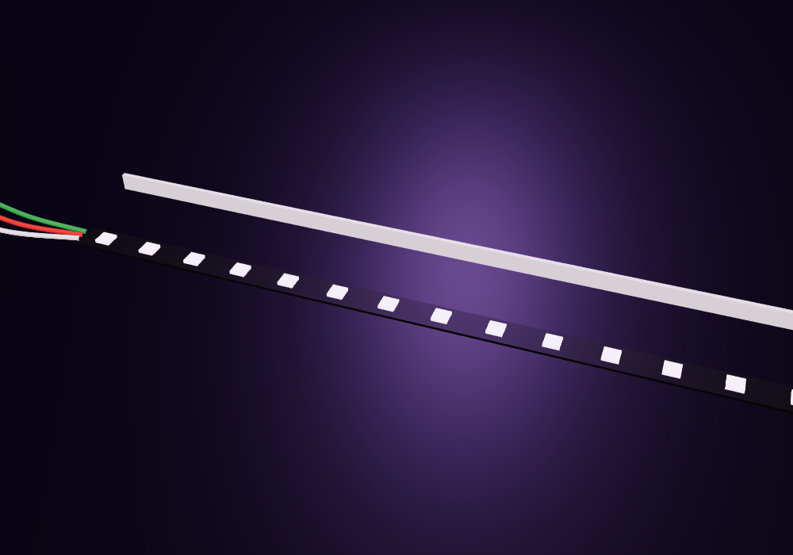
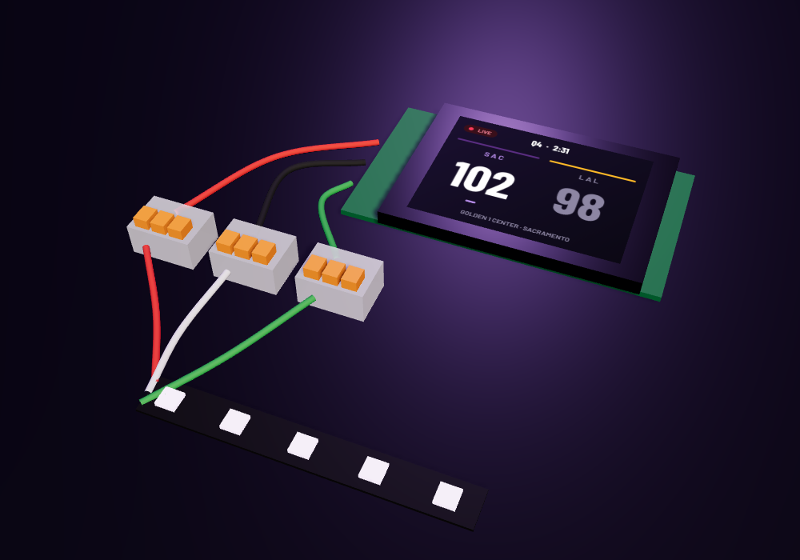
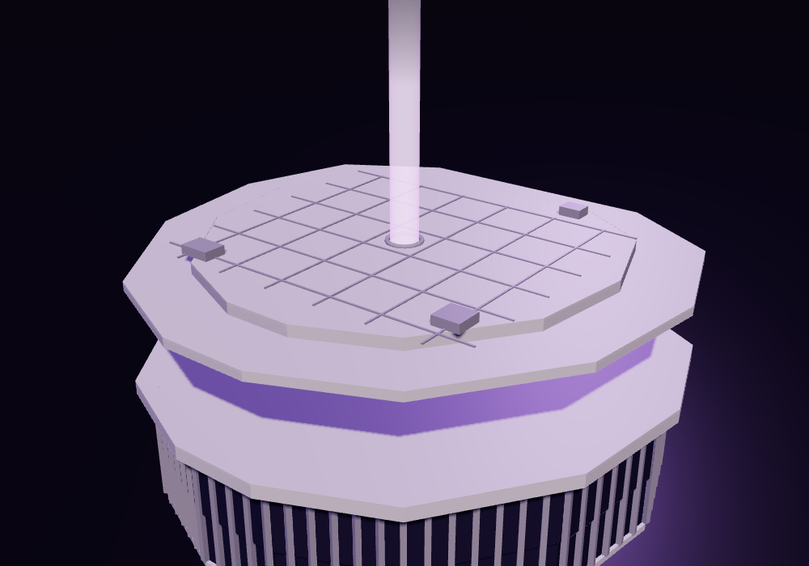

Rendered from the three.js scene in docs/render/scene.html with headless Chrome. The arena is a stylized stand-in until the Printables mesh is downloaded; the plinth, board, beam and wiring are to size.
Hero. Cover of the overview PDF.

Exploded. Tube and spine, lid, base with socket, plinth, bottom lid.

Cutaway. Board tilted behind the window, WAGO nuts inside.Screen. Live layout on the tilted 2.8" display.

Beam. Strip on its spine inside the ghosted tube, socket below.

Step 1. Strip cut to 15 LEDs beside the spine.

Step 6. Three lever nuts between the board pigtails and the strip.

Steps 3–4. Tube standing in the socket, lid lowered over it.